29.5.2. Метод неопределенных коэффициентов
Частное решение НЛДУ  может
быть найдено методом неопределенных коэффициентов для некоторых видов функции
может
быть найдено методом неопределенных коэффициентов для некоторых видов функции  в правой части уравнения и корней
характеристического уравнения его левой части.
в правой части уравнения и корней
характеристического уравнения его левой части.
может
быть найдено методом неопределенных коэффициентов для некоторых видов функции в правой части уравнения и корней
характеристического уравнения его левой части.Рассмотрим следующие случаи:
- 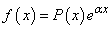
1) Если  не является
корнем характеристического уравнения, то частное решение ищем в виде , где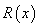 -
многочлен с неизвестными коэффициентами, степень которого совпадает со степенью
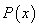;
не является
корнем характеристического уравнения, то частное решение ищем в виде , где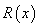 -
многочлен с неизвестными коэффициентами, степень которого совпадает со степенью
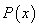;
не является
корнем характеристического уравнения, то частное решение ищем в виде , где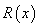 -
многочлен с неизвестными коэффициентами, степень которого совпадает со степенью
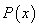;2) Если корень кратности  характеристического уравнения, то
частное решение ищем в виде 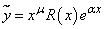.
характеристического уравнения, то
частное решение ищем в виде 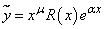.
корень кратности характеристического уравнения, то
частное решение ищем в виде 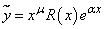. 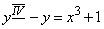.
Характеристическое уравнение ,
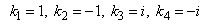.
Общее решение однородного уравнения:
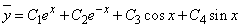.
Правая часть уравнения 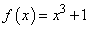 имеет
вид:
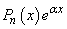,
где
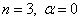,
корни характеристического уравнения не совпадают с .
. Частное решение ищем в виде:
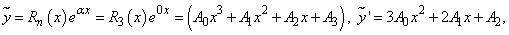
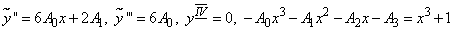.
Приравнивая коэффициенты при одинаковых степенях  , получим:
, получим:
, получим: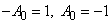, 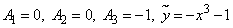.
Общее решение:
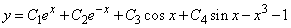.
- 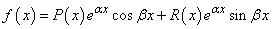
1) Если  не является
корнем характеристического уравнения, то частное решение ищем в виде 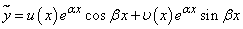, где 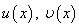 –
многочлены, степень которых равна наивысшей степени и
.
не является
корнем характеристического уравнения, то частное решение ищем в виде 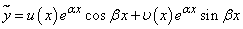, где 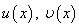 –
многочлены, степень которых равна наивысшей степени и
.
не является
корнем характеристического уравнения, то частное решение ищем в виде 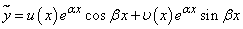, где 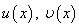 –
многочлены, степень которых равна наивысшей степени и
.2) Если является корнем
характеристического уравнения кратности ,
то частное решение:
является корнем
характеристического уравнения кратности ,
то частное решение: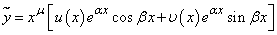.
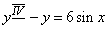.
Характеристическое уравнение: 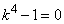, .
Общее решение однородного уравнения
, 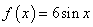
имеет вид:
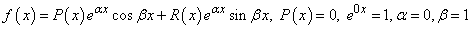,
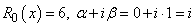 совпадает с корнем 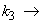 решение ищем в виде:
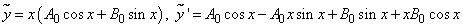,
,
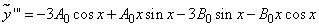,
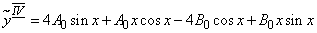.
Подстановка этих значений в исходное уравнение дает
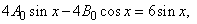,
откуда
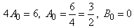
и
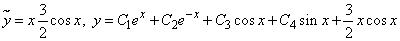